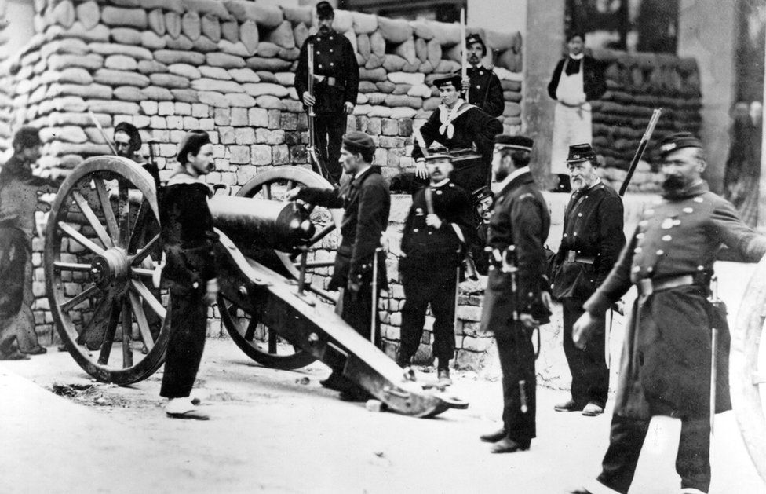

Overview
The Paris Commune was a far-left popular movement that took place in Paris, France. The commune was established after radicalised members of the National Guard refused to accept the Third Republic's authority and sought to govern themselves independently through a means of direct democracy and a socialist economic system.
The revolution was inspired by the First International's Marxist ideas. The people of Paris felt that the French empire had failed to protect them from the Prussian seige in the Franco-Prussian war and united to overthrow them, resulting in a worker-run commune from the 18th of March 1871 to the 28th of May 1871.
The commune was the first truly democratic city in all of France, with many policies that favored the working class implemented. This was the first instance of the Marxist idea of "Dictatorship of the proletariat".
The French army moved swiftly to put down the revolt, resulting in what would be called "Bloody week", in which over 6,500 (some reports claim 10,000) communards were killed. The French government regained control of the city and many leaders of the revolt were executed or deported.
Read more:
